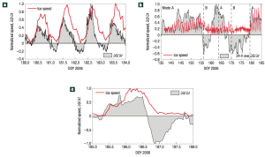
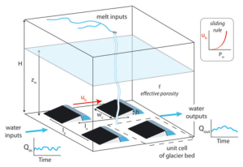

Water within and at the base of glaciers has a dramatic impact on the rate of glacier ice flow.


However, the connection between water and ice flow has been uncertain. At one point, it was thought that when more water flows through a glacier, the glacier itself will flow faster. However, in the cover article of the first issue of Nature Geoscience, my co-authors and I demonstrate how it is only the increases in the rate of water storage, not the total throughput of water, that drives glacier motion.


This work drew on the annual outburst flood of Hidden Creek Lake through and beneath the Kennicott Glacier in Alaska to investigate the links between glacier hydrology and glacier motion. With Bob Anderson and Suzanne Anderson at the University of Colorado Institute for Arctic and Alpine Research, I collected new field data over 100 days of the glacier melt season and analyzed this data to develop a new conceptual model that emphasized the dynamism intrinsic to the subglacial hydrologic system. A second paper, published in the Journal of Glaciology, gives a more complete description of our data and combines predictive modeling with the ideas put forth in the Nature Geoscience letter.